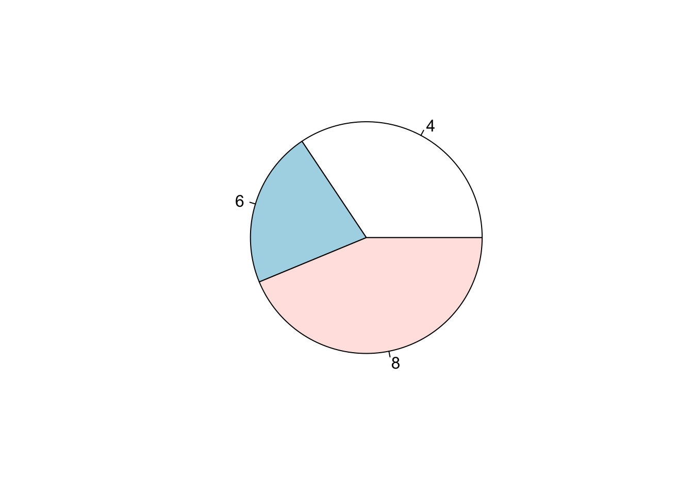
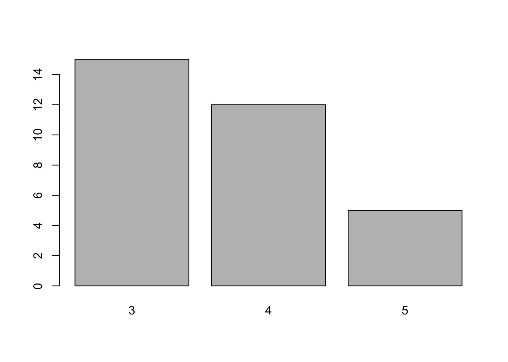
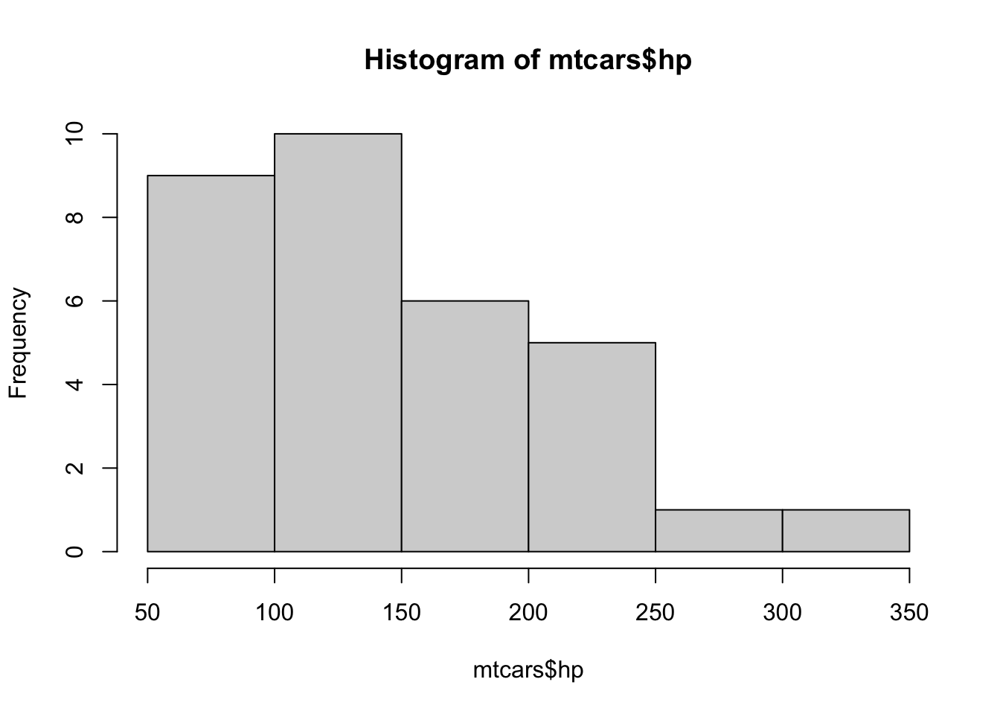
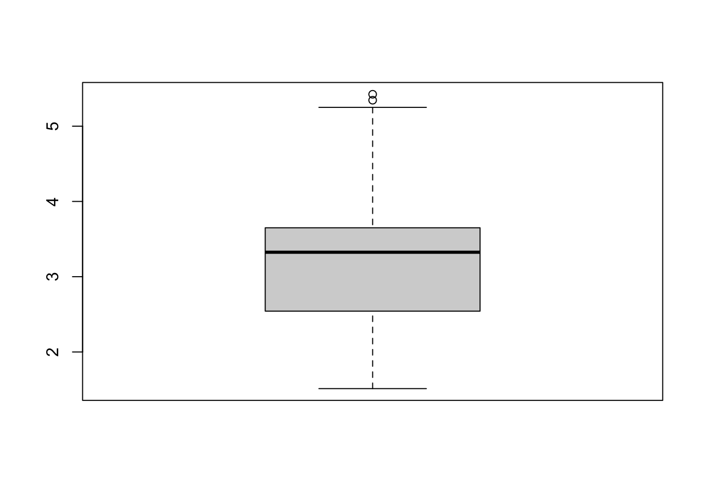
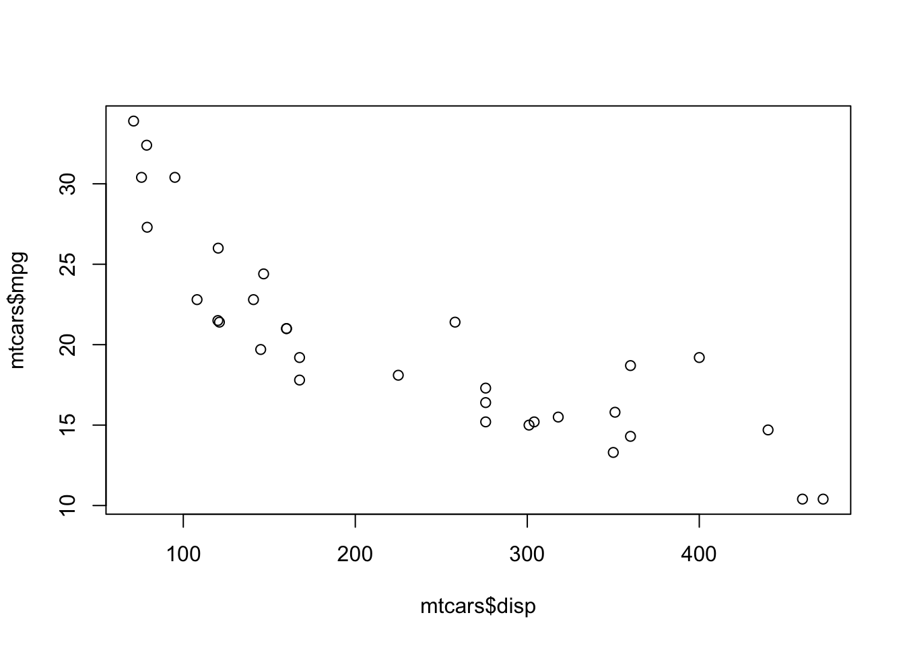

# ==============================================================================
## Vector
# ==============================================================================
poker_vec <- c(140, -50, 20, -120, 240)
roulette_vec <- c(-24, -50, 100, -350, 10)
days_vec <- c("Mon", "Tue", "Wed", "Thu", "Fri")
names(poker_vec) <- days_vec
names(roulette_vec) <- days_vecHomework 2
Basic R, Data Description and Graphics
Homework
Important
Due Friday, Feb 6, 11:59 PM
Homework 2 covers Week 2 and 3 course materials.
Please submit your work in one PDF file to D2L > Assessments > Dropbox. Multiple files or a file that is not in pdf format is not accepted.
Attach your R code to show how you obtain your answer.
Hand drawn tables and graphs receive no credits.
- Questions started with (MSSC) are required for MSSC 5720 students, and optional for MATH 4720 students.
Homework Questions
-
Vector. The code above shows a Marquette student poker and roulette winnings from Monday to Friday. Copy and Paste them into your R and complete the problem 1.
- Assign to the variable
total_dailyhow much you won or lost on each day in total (poker and roulette combined). - Calculate the winnings overall
total_week. Print it out.
- Assign to the variable
## (a)
total_daily <- poker_vec + roulette_vec
total_daily Mon Tue Wed Thu Fri
116 -100 120 -470 250 ## (b)
total_week <- sum(total_daily)
total_week[1] -84# ==============================================================================
## Factor
# ==============================================================================
# Create speed_vector
speed_vec <- c("medium", "slow", "slow", "medium", "fast")-
Factor.
-
speed_vecabove should be converted to an ordinal factor since its categories have a natural ordering. Create an ordered factor vectorspeed_facby completing the code below. Set the argumentorderedtoTRUE, and set the argumentlevelstoc("slow", "medium", "fast"). Printspeed_fac.
-
[1] medium slow slow medium fast
Levels: slow < medium < fast# ==============================================================================
## Data frame
# ==============================================================================
name <- c("Mercury", "Venus", "Earth", "Mars", "Jupiter", "Saturn",
"Uranus", "Neptune")
type <- c("Terrestrial planet", "Terrestrial planet", "Terrestrial planet",
"Terrestrial planet", "Gas giant", "Gas giant",
"Gas giant", "Gas giant")
diameter <- c(0.382, 0.949, 1, 0.532, 11.209, 9.449, 4.007, 3.883)
rotation <- c(58.64, -243.02, 1, 1.03, 0.41, 0.43, -0.72, 0.67)
rings <- c(FALSE, FALSE, FALSE, FALSE, TRUE, TRUE, TRUE, TRUE)-
Data Frame. You want to construct a data frame that describes the main characteristics of eight planets in our solar system. You feel confident enough to create the necessary vectors:
name,type,diameter,rotationandringsthat have already been coded up as above. The first element in each of these vectors correspond to the first observation.- Use the function
data.frame()to construct a data frame. Pass the vectorsname,type,diameter,rotationandringsas arguments todata.frame(), in this order. Call the resulting data frameplanets_df. - Use
str()to investigate the structure of the newplanets_dfvariable. Which are categorical (qualitative) variables and which are numerical (quantitative) variables? For those that are categorical, are they nominal or ordinal? For those numerical variables, are they interval or ratio level? discrete or continuous? - From
planets_df, select the diameter of Mercury: this is the value at the first row and the third column. Simply print out the result. - From
planets_df, select all data on Mars (the fourth row). Simply print out the result. - Select and print out the first 5 values in the
diametercolumn ofplanets_df. - Use
$to select theringsvariable fromplanets_df.
- Use the function
## (a)
planets_df <- data.frame(name, type, diameter, rotation, rings)
planets_df name type diameter rotation rings
1 Mercury Terrestrial planet 0.382 58.64 FALSE
2 Venus Terrestrial planet 0.949 -243.02 FALSE
3 Earth Terrestrial planet 1.000 1.00 FALSE
4 Mars Terrestrial planet 0.532 1.03 FALSE
5 Jupiter Gas giant 11.209 0.41 TRUE
6 Saturn Gas giant 9.449 0.43 TRUE
7 Uranus Gas giant 4.007 -0.72 TRUE
8 Neptune Gas giant 3.883 0.67 TRUE## (b)
str(planets_df)'data.frame': 8 obs. of 5 variables:
$ name : chr "Mercury" "Venus" "Earth" "Mars" ...
$ type : chr "Terrestrial planet" "Terrestrial planet" "Terrestrial planet" "Terrestrial planet" ...
$ diameter: num 0.382 0.949 1 0.532 11.209 ...
$ rotation: num 58.64 -243.02 1 1.03 0.41 ...
$ rings : logi FALSE FALSE FALSE FALSE TRUE TRUE ...# name, type, rings: categorical, nominal
# diameter, rotation: numerical, ratio, continuous
## (c)
planets_df[1, 3][1] 0.382## (d)
planets_df[4, ] name type diameter rotation rings
4 Mars Terrestrial planet 0.532 1.03 FALSE## (e)
planets_df[1:5, "diameter"][1] 0.382 0.949 1.000 0.532 11.209## (f)
planets_df$rings[1] FALSE FALSE FALSE FALSE TRUE TRUE TRUE TRUE-
Data Description and Graphics. We use the data set
mtcarsto do data summary and graphics. Type?mtcarsfor the description of the data set.- Use the function
pie()to create a pie chart for the number of cylinders (cyl). Show the plot. What the number of cylinders has the most frequencies in the data? - Use the function
barplot()to create a bar chart for the number of gears (gear). Show the plot. What the number of gears has the most frequencies in the data? - Use the function
hist()to generate a histogram of the gross horsepower (hp). Show the plot. Is it right or left-skewed? - Use the function
boxplot()to generate a boxplot of car weight (wt). Show the plot. Are there any outliers? - Use the function
plot()to create a scatter plot of displacement (disp) vs. miles per gallon (mpg). Show the plot. As the displacement increases, the miles per gallon tends to increase or decrease?
- Use the function


## (c)
## right-skewed
hist(mtcars$hp, breaks = 10)
## (d)
## there are two outliers
boxplot(mtcars$wt)
## (e)
## As the displacement increases, the miles per gallon tends to decrease.
plot(x = mtcars$disp, y = mtcars$mpg)
To save your figures, in RStudio you go to tab Plots > Export > Save as Image > choose Image format (PNG is good), choose where the image is saved (Directory), type the File name, decide Width and Height > Click Save. To download an image file to your local computer, select the file, go to More > Export > Download. You could take screenshots of plots or code to show your work too.
-
(MSSC) R List Data Structure. A list in R allows you to gather a variety of objects under one name (that is, the name of the list) in an ordered way. These objects can be matrices, vectors, data frames, even other lists. Alos, it is not required that these objects are related to each other in any way.
- Use command
list()to create a list namedemployeeof three elements,name,salary, andunionwith value"Joe",55000andTRUErespectively. Printemployee. - Construct a list, named
my_listthat contains 3 list components:days_vec,planets_df, andemployee. Print the structure ofmy_list.
- What is the difference between
my_list[[1]]andmy_list[1]? What is the data type they return? - Obtain the salary in
employeefrommy_listusing$.
- Use command
## (a)
employee <- list(name = "Joe", salary = 55000, union = TRUE)
employee$name
[1] "Joe"
$salary
[1] 55000
$union
[1] TRUE## (b)
my_list <- list(days_vec, planets_df, employee)
my_list[[1]]
[1] "Mon" "Tue" "Wed" "Thu" "Fri"
[[2]]
name type diameter rotation rings
1 Mercury Terrestrial planet 0.382 58.64 FALSE
2 Venus Terrestrial planet 0.949 -243.02 FALSE
3 Earth Terrestrial planet 1.000 1.00 FALSE
4 Mars Terrestrial planet 0.532 1.03 FALSE
5 Jupiter Gas giant 11.209 0.41 TRUE
6 Saturn Gas giant 9.449 0.43 TRUE
7 Uranus Gas giant 4.007 -0.72 TRUE
8 Neptune Gas giant 3.883 0.67 TRUE
[[3]]
[[3]]$name
[1] "Joe"
[[3]]$salary
[1] 55000
[[3]]$union
[1] TRUE## (c)
## my_list[[1]] returns a vector of type character
my_list[[1]][1] "Mon" "Tue" "Wed" "Thu" "Fri"typeof(my_list[[1]])[1] "character"## my_list[1] keeps the list structure with the first element of my_list
my_list[1][[1]]
[1] "Mon" "Tue" "Wed" "Thu" "Fri"typeof(my_list[1])[1] "list"## (d)
my_list[[3]]$salary[1] 55000-
AI Usage Declaration. Using GenAI is permitted for this course. If you choose to use GenAI to assist with your homework, you must include a brief statement documenting your use. Please provide the following information:
- Why/How I Used AI Why do you need to use GenAI? Which tool did you use? Describe your prompts or questions. What and how did you ask the AI to help you?
- Generated Output Include a screenshot or excerpt (copy and paste) of the AI’s response.
- How I Used the Output Did you revise it? Did you use it directly, or compare it with your answers? What decisions did you make based on the output?